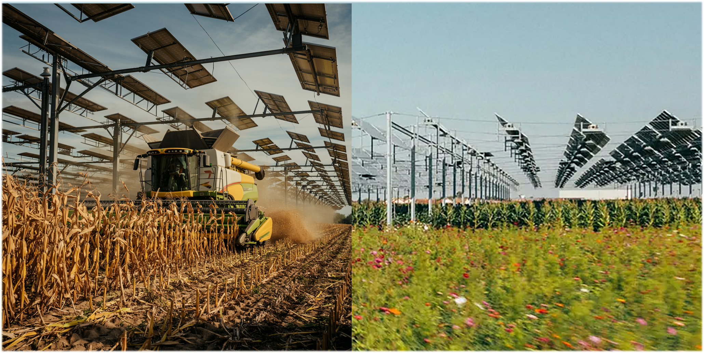

TL;DR: Agrivoltaic technologies face implementation challenges that robotics and AI can help address effectively. With appropriate design considerations, practical implementation is feasible even in Midwestern corn-soy rotations. With targeted solutions to these technical hurdles, agrivoltaics can transition from a promising theory to practical scalability.
Building on my previous analysis of agrivoltaics’ theoretical benefits 1 , I now address the critical implementation question: How can solar energy and agriculture be integrated in real farming systems?
From Concept to Implementation: The Engineering Challenge
The primary obstacle to widespread agrivoltaic adoption is practical implementation on working farmland. Navigating a 30-foot combine harvester through a field dotted with solar mounting structures may seem daunting, but this challenge is already a reality in France.
What AI envisions is very close to reality:

Colocating photovoltaic systems could increase farming costs compared to traditional farming due to the complexity of working around solar infrastructure. Exactly how much additional expense depends on the baseline: For labor-intensive crops like strawberries, the increment would be negligible. For automation-intensive crops like corn, extra time may be needed to align equipment with infrastructure, as well as increased insurance coverage for accidents. But AI-driven agricultural robotics now offers promising solutions that could eliminate these additional costs entirely, while providing local power to reduce operating costs for the system. For example, technologies like Deere’s See & Spray vision system, which processes 20 images per second to distinguish crops from weeds, could revolutionize navigation in complex agrivoltaic environments and fundamentally change the economics by dramatically reducing input costs.
The Triple Synergy: AI + Agrivoltaics + Plant Biology
This technological confluence creates synergies greater than the sum of its parts:
-
Optimized Light Distribution : Dynamic panels adjust their angles and transparency based on crop needs and conditions, while semi-transparent modules allow specific types of radiation to pass through.
-
Reduced Plant Stress : Calibrated shade maintains crops in their photosynthetic sweet spot without triggering wasteful protective NPQ mechanisms, improving yields for shade-loving crops like strawberries and peppers.
-
Enhanced Water Efficiency : Solar shade reduces evapotranspiration while maintaining yields.
-
Improved Solar Performance : Plant transpiration cools panels, enhancing efficiency by up to 10%.
-
Autonomous Management : AI-driven robotics automates labor-intensive tasks using locally produced power.
The Standardization-Flexibility Tension
A critical tension exists between standardization and flexibility in agrivoltaic implementation. Engineering favors uniformity, while AI and robotics enable adaptability. These approaches can function complementarily when implemented thoughtfully.
For widespread adoption, some standardization in panel layouts, heights, and interfaces is essential. Without this, equipment manufacturers face an expensive, bespoke market, with too many variables to effectively drive down costs. A sensible approach would include standardized row spacing categories by crop type, consistent mounting heights (4 meters or more for row crops), standard adjustment mechanisms, and standardized electrical interfaces.
The most promising approach combines standardization with flexibility through:
-
Tiered standardization: Multiple standard configurations for different crop types and climate zones
-
Modular robotic systems: Base platforms with customizable attachments for specific tasks
-
Adaptive AI: Machine learning that manages variations within standardized parameters
This hybrid approach recognizes that while complete standardization may be the long-term goal, the transition requires systems that function in both standardized and non-standardized environments.
Technical Pathways to Implementation
I see three clear technical pathways to tackle the equipment challenge in agrivoltaics:
-
Adaptable Solar Infrastructure : Arrays that temporarily move to allow machinery access, including retractable panels and elevated systems. These increase installation costs but maintain conventional farming practices 2 .
-
Specialized Agricultural Equipment : Redesigned farm equipment that works around solar infrastructure. This becomes economically attractive when considering that agrivoltaic fields can provide “free” electricity for farm equipment, which could reduce operating expenses by 15-20%.
-
AI-Driven Autonomous Systems : Purpose-built autonomous equipment for agrivoltaic environments, like the Israeli startup agRE.tech’s system that attaches to existing infrastructure 3 .
For this third approach, the numbers are compelling: While specialized autonomous equipment might double the initial investment ($500,000-750,000 to $1-1.5 million for a 100-acre farm), the combination of reduced fuel (15-20%) and labor costs (30-40%), plus electricity generation ($2,000-3,000/acre annually), suggests break-even within 3-5 years followed by increased profitability.
Let’s analyze this approach. A conventional 100-acre farm might require an equipment investment of $500,000 to $750,000. As an edge case, let’s assume that transitioning to specialized autonomous equipment for agrivoltaic settings doubles the initial investment to between $1 million and $1.5 million. This equipment would be electric, reducing fuel costs by 15-20%. Like the See & Spray system, it would be able to regularly scout the field for issues and fix them, reducing inputs and improving yields. In addition, the agrivoltaic system would enable electricity generation, producing $2,000 to $3,000 revenue per acre annually. Taken together, a rough calculation suggests break-even within 3 to 5 years, followed by considerably increased profitability compared to conventional farming alone.
Already, landowners in many jurisdictions are supplementing their income with wind turbines. For entrepreneurial farmers, this could be another source of revenue. Let’s take a specific example.
Practical Implementation: Chicago-Area Corn-Based Agrivoltaics
To illustrate these principles in action, let’s examine how agrivoltaics could be implemented in the greater Chicago area with a focus on corn production. I chose Chicago as an example primarily because it already has the highest “clean electricity” component (>70%) of any major US city, thanks to nuclear power. It is also near some of the most productive farmland in the country. This region presents distinct challenges and opportunities that underscore the complexity of real-world applications.
Height and Spacing Considerations
Contrary to traditional assumptions, corn can thrive under properly designed agrivoltaic systems. Research shows that anti-tracking configurations during specific periods of the day resulted in a 5.6% increase in corn yield compared to standard tracking setups, with cumulative radiation increasing by 7.6%.
The improvement in yield under anti-tracking configurations is driven by increased radiation availability and optimized light distribution. Reduced shadow duration allows crops to receive more consistent sunlight, which enhances photosynthesis and growth 4 . Optimal corn-based agrivoltaics requires: a minimum panel height of several meters, carefully calibrated panel density, uniform row spacing aligned with standard equipment, and panel tracking capabilities that adjust seasonally. This precision explains why early attempts failed—they treated shade as a binary variable rather than as a variable that could be optimized.
Equipment Compatibility
The Midwest’s large equipment investments pose a significant implementation challenge, as combine harvesters, planters, and sprayers commonly exceed 30 feet in width.
Three promising approaches parallel our earlier technical pathways:
-
Adaptable Solar Infrastructure : Arrays that temporarily move for equipment access, with Purdue University researching optimal spacing specifically for corn 5 . These increase costs by 25-40% but maintain conventional farming practices.
-
Specialized Agricultural Equipment : Farm equipment redesigned for solar environments, with compelling economics when powered by the agrivoltaic field’s electricity.
-
AI-Driven Autonomous Systems : Purpose-built autonomous equipment with sensors for navigating complex environments.
The 4,100-acre Double Black Diamond solar project near Waverly, Illinois, demonstrates potential scale, offsetting 70% of Chicago’s municipal electricity needs 6 , although it does not yet integrate crops.
Seasonal Considerations and Climate Synergies
The Chicago region’s climate offers unique advantages for agrivoltaics. The urban environment concentrates demand and infrastructure, allowing utilities flexibility to adjust supply to meet demand. The crop transpiration cooling effect increases panel efficiency up to 5% 7 , creating a virtuous cycle well-suited to Midwest summers.
Corn production’s seasonal operations interact with solar infrastructure in complementary ways:
-
Spring (April-May): Panels positioned for planter access
-
Summer (June-August): Dual production with beneficial shade during peak heat stress
-
Fall (September-October): Panels positioned for harvest equipment
-
Winter (November-March): Solar-only production and maintenance
What makes this compelling is the alignment between peak electricity demand and when panels provide the most beneficial shade for corn, preventing energy waste through Non-Photochemical Quenching during summer heat.
Economic Integration through Emphyteutic Leases
Perhaps the most compelling model comes from the legal sphere. Emphyteutic 8 leases offer a structural solution to competing land-use tensions by creating long-term arrangements that maintain agricultural rights while allowing solar infrastructure, providing stability for both agricultural planning and solar financing.
The economics for Chicago-area farming implementation are compelling:
-
Solar lease revenues of $1,000/acre annually (comparable to gross corn production but without input costs/weather risks 9 )
-
Potential 4-6% corn yield increases, adding $50-75/acre
-
7-8% reduced irrigation requirements 10
-
5% panel efficiency improvements from crop cooling
By pairing solar PV with crops, agrivoltaics dramatically boosts land-use efficiency— traditional solar panels occupy approximately 10 acres per megawatt. The DOE lists 314 agrivoltaic sites totaling 2.8 GW . As growers face losses of $200–$300 per acre this year (corn losses exceeding $ 200/acre in Minnesota and cash rents as high as $300/acre in parts of the Midwest ), steady solar lease revenues provide a crucial financial hedge against volatile commodity markets. Success requires practical standardization, collaborative data sharing, and regulatory frameworks that recognize these dual-use efficiencies. Without these supports, agrivoltaics risks remaining a promising concept rather than a transformative approach to land management.
Conclusion
The transition from theoretical elegance to practical implementation in agrivoltaics requires addressing real engineering challenges. By combining standardized infrastructure with flexible, AI-driven robotics, optimizing them for specific crops like corn, and creating suitable economic structures, we can unlock the potential of these dual-use systems. The path forward is challenging but attainable, offering substantial benefits for energy production, agricultural sustainability, and land-use efficiency.
[See earlier posts in this series]
See ise.fraunhofer.de , in particular the PDF Agrivoltaics: Opportunities for Agriculture and the Energy Transition.
Gupta, V., Gruss, S. M., Cammarano, D., Brouder, S. M., Bermel, P. A., Tuinstra, M. R., Gitau, M. W., & Agrawal, R. (2024). Optimizing corn agrivoltaic farming through farm-scale experimentation and modeling. Cell Reports Sustainability , 1 (100148). doi.org
Bowman, S., et al. (2022). Research seeks ways to grow solar and crops together in the skeptical Corn Belt. Wisconsin Watch wisconsinwatch.org
Mayor Brandon Johnson Announces 100% Renewable Energy Milestone For City Of Chicago . Yes, there’s creative accounting, but the 593 MW Black Diamond project is the main renewable energy project.
Williams, H. J., Hashad, K., Wang, H., & Zhang, K. M. (2023). The potential for agrivoltaics to enhance solar farm cooling. Applied Energy , 332, 120478. doi.org
Your vocabulary word: Think of it as a for-purpose lease like leasing mineral rights—Farmers would be free to farm the land as before, gaining revenue from the lease. At the same time, the solar power company would have the right to install and operate the solar array above the field.